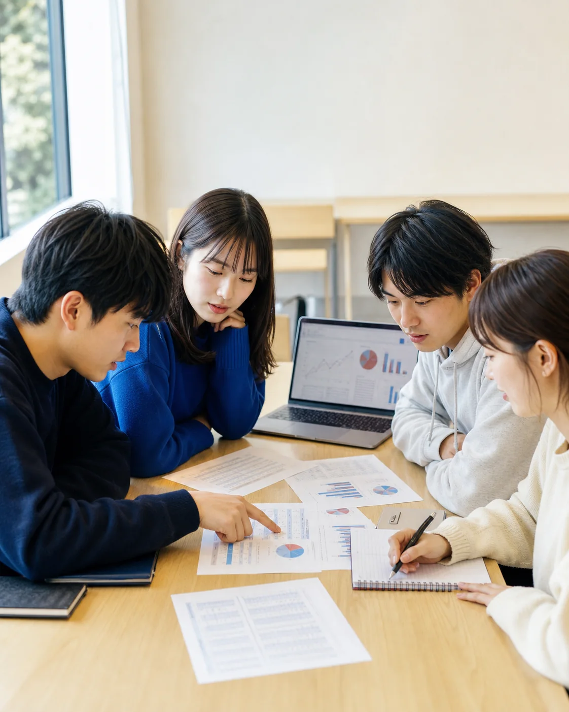

「若い感性は二度と戻らない。だから、目いっぱい遊ぶ方がよい」
今しかできない経験を重視する考え方。
大学で学んだ知識をつなぎ、現実を考えるための「使える力」へ。栗原ゼミは、自分で問い、自分で決め、自分の未来をひらきたい人のためのゼミです。
大学の教養科目や専門科目で学んだ知識をつなぎ合わせ、現実の企業や社会が抱える問題を考えるための「使える力」に変えます。
大学教育を否定するのではありません。これまで学んできたことに新しい価値を与え、知識が現実の中で働き始める状態をつくります。
今しかできない経験を重視する考え方。
未来につながる準備を重視する考え方。
現象の背後にある前提やメカニズムを読み解く。
本当に問題とすべきポイントは何かを考える。
分野を越えて、学んだ知識を総動員する。
自分なりの答えや解決策を形にする。
自分の考えを、他者に伝わる形で表現する。
最後は、自分の判断軸で選び、結果を引き受ける。
3年次は知識をつなぎ、4年次は自分の答えをつくる。希望者は卒業後も、現実の中で学びを試し、更新していきます。

知識の動態化を目指す
知識を覚えるだけでなく、現実の企業を考えるための道具として使う訓練を行います。
具体的な事例をきっかけに、科目を超えて知識と知識がつながり始めます。
根拠のある判断を目指す
利益を生み、従業員に高い給与を払える。一方で、能力が社内業務に合わせて育つため、転職時には苦しむことになる企業経営。
この経営は「良い経営」だろうか。動態化した知識から答えを導き、根拠をもって「これが自分の判断だ」と納得できることを目指します。
栗原ゼミアルムナイ
参加は任意。学び続けたい人のために、卒業後も学びの場を用意しています。
栗原ゼミでは、正式な活動が始まる前に「プレゼミ」を行います。原則として、このプレゼミへの参加は必須です。同期全員で、2年間の学びを始めるための土台をつくります。
問題解決能力や課題設定力、分析、価値観と判断力、AI時代に経営を学ぶ意味など、栗原ゼミでこれから何を学び、どんな力を身につけていくのかを、資料と仲間との議論を通して考えていきます。
「どんな仲間・チームでありたいか」「自分はその中でどんな役割を果たすのか」を考え、最後にはゼミ生自身で、理想とするゼミの姿や行動原則を決めていきます。
2年間、自分たちはどのようなゼミでありたいのか。コンセプトをつくり、その学びを支える「チーム」を自分たちでつくる。それがプレゼミです。
目指すのは「優秀な学生を集めること」ではなく、栗原ゼミという環境を本当に使いたい人と出会うことです。
教員である栗原にとって、志望者が優秀であるかは問題ではありません。重要なのは、志望者が栗原ゼミを使いこなせるかどうかです。
ゼミの目的や学び方を理解し、「自分が求める学びと合っている」「この環境を使いたい」と納得したうえで選んでいるかを重視します。
栗原ゼミを使い、同時に他のゼミ生のために、ゼミをより良い環境にする覚悟があるか。そこまで含めて、適合性を見ています。
リーダーに「なれる」は能力の問題。
「なりたい」は、本人の意思と環境の問題です。
必要な場面で状況を読み、自分で考え、自分で決め、その行動と結果を引き受けられる能力を育てます。
これは能力や人間性の優劣ではなく、学び方のタイプと環境との適合性の問題です。教育の目的が明確だからこそ、栗原ゼミは万人向けではありません。
栗原ゼミでは、基本的に週2コマ（180分）のゼミを行います。「あと何回なら休める」といった通常の授業感覚で参加するつもりなら、学びの流れから取り残されてしまうと思います。
ゼミで出会った仲間同士、または個人で、主体的な活動を行うことがあります。これらは有志による活動であり、栗原ゼミの運営とは関係ありません。
過去には、起業（3件）、フォロワー10数万人のインフルエンサー、アプリ開発、企業説明会の開催、日立市と連携した地域活性化事業などが生まれました。重要なのは、すべて自分たちで考え、企画したものであることです。
受け身の人、最低限の負担で単位を取りたい人にとっては、居心地のよいゼミではないと思います。
ゼミの内容を理解し、このゼミが自分には必要だと説明できるかを見ます。
栗原ゼミを知るために十分な情報収集をしているか。
自分はなぜ栗原ゼミを希望するのか。その理由を徹底的に考える。
面談や志望理由書で、自分の言葉と態度で説明する。本気度をどのように証明するか。
栗原ゼミを知り、自分との適合性を考えたうえで、面談へ進む流れです。日程や申込方法の詳細は、授業内の説明とオープンチャットで案内します。
11月頃、財務会計論Ⅱの授業内で説明します。興味を持ったら、配布資料のQRからオープンチャットに登録してください。
月曜の3・4限（4年）／5・6限（3年）。内容的には5・6限がより参考になります。先輩の様子もぜひ見に来てください。
エントリー希望者は予約制（先着）で面談します。対面・オンライン・集団形式のいずれかで、志望純度を確認します。
※ 連絡は原則オープンチャットに一元化。メールでの個別対応は行いません（プライベートな事情を除く）。